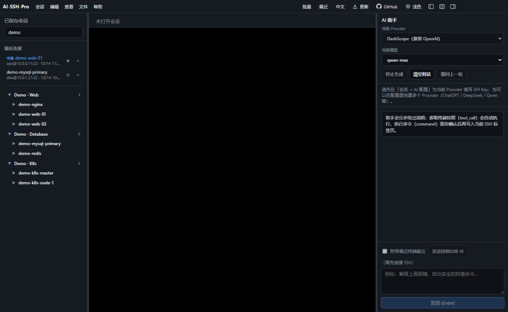
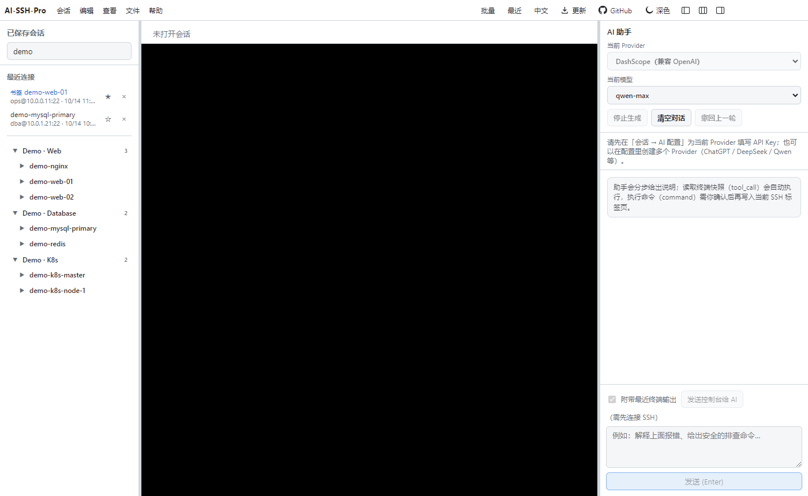

演示数据 · Demo data only
主机档案存储在本地磁盘（默认 ~/.ai-ssh-pro/inventory），应用内 AI 与独立的 stdio MCP 服务共享同一份文件。可接入 Cursor、Claude Desktop 等工具。
Tools: list_hosts · get_host · search_hosts · upsert_host · upsert_service · append_note
{
"mcpServers": {
"ai-ssh-pro-inventory": {
"command": "node",
"args": ["/path/to/ai-ssh-pro/scripts/mcp-inventory-server.mjs"]
}
}
}直接从 Releases 下载安装包，或从源码运行。AI 支持任意 OpenAI 兼容接口（如 DashScope）。
🔒 隐私：SSH 密码、私钥与 API Key 只保存在本机，并使用系统安全存储加密。无云同步、无账号。
git clone https://github.com/guoshuaipeng/ai-ssh-pro
cd ai-ssh-pro
npm install
npm run dev
# 打包 Windows / macOS 安装包
npm run dist